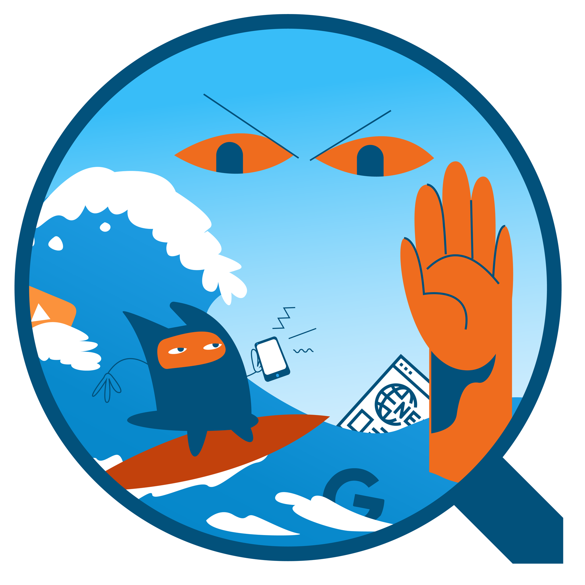
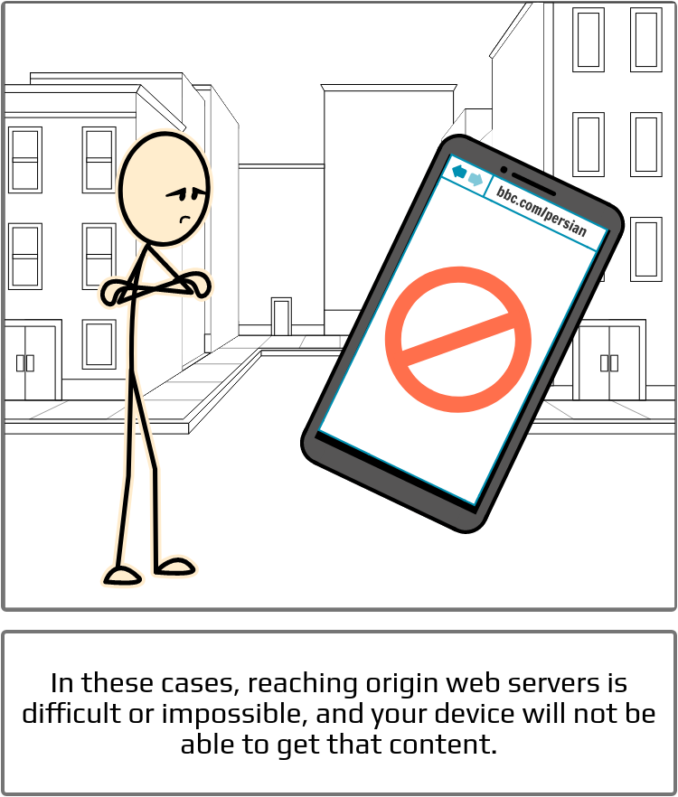
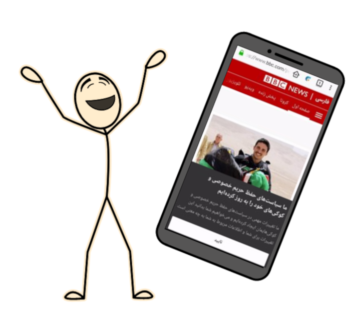

Ceno ဘရောက်ဇာ အလုပ်လုပ်ပုံ

နိုင်ငံများရှိ ဝက်ဘ်ဆိုက်အသုံးပြုခြင်း အသွားအလာတွင် အင်တာနက်ကို စစ်ထုတ်ခြင်းအတွက် Google ကဲ့သို့သော ဗဟိုကြားခံအဖွဲ့အစည်းများကို ဖြတ်၍ လမ်းကြောင်းဖွင့်ပေးသည်။
ဤဒီဇိုင်းသည် လူကြိုက်များသော ပရောက်စီများ၊ VPN ဆာဗာများနှင့် ဖွင့်/ပိတ် ခလုတ်များ စသည်တို့ကို တည်နေရာရှာပြီး ပိတ်ဆို့ရာတွင် စိစစ်ခြင်းအား အားသာချက်ရစေသည်။

ဤအခြေအနေများတွင် မူလ ဝက်ဘ်ဆာဗာများသို့ ရောက်ရှိရန် ခက်ခဲသည် သို့မဟုတ် မဖြစ်နိုင်ပါ၊ ထို့ပြင် သင့်စက်သည် ထိုအကြောင်းအရာကို ရနိုင်မည် မဟုတ်ပါ။

Ceno သည် ဝက်ဘ် အကြောင်းအရာကို မည်သည့်နေရာတွင်မဆို သိုလှောင်ပြီး မျှဝေနိုင်သည့် မိုဘိုင်း ဝက်ဘ်ဘရောက်ဇာ ဖြစ်သည်။

Ceno သုံးစွဲသူများသည် တစ်ဦးနှင့်တစ်ဦး ချိတ်ဆက်ရန် ကမ္ဘာငယ် ကွန်ရက်များကို ဖန်တီးပြီးနောက် ဆင်ဆာဖြတ်ထားသော ဇုန်ပြင်ပတွင် ပေါင်းကူးတစ်ခုနှင့် ချိတ်ဆက်သည်။
